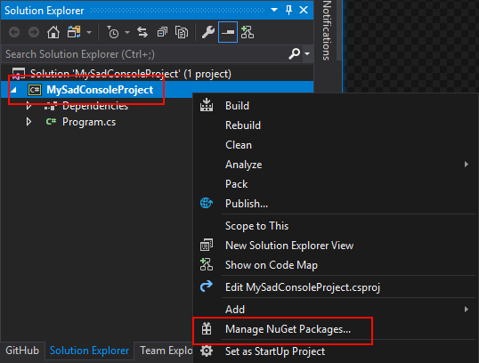
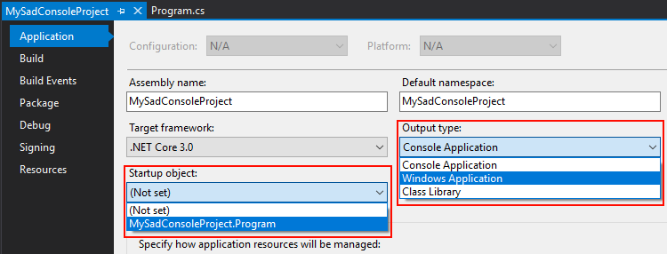

Create a new .NET Framework project
This article describes how to setup SadConsole with a new project in Visual Studio.
It is recommended that you use .NET Core to create your SadConsole game. To do so, follow the .NET Core tutorial.
First, create a new project in Visual Studio. Depending on your version, some dialogs will look different. If you are not familiar with Visual Studio, follow the Microsoft documentation on how to create a Visual Studio project.
Create a new .NET project
Using Visual Studio, create a new project. It is recommended that you create a new Empty Project (.NET Framework) and target the latest version of .NET, or at a minimum, 4.6.1.
Note
If you are going to use the MonoGame Game project template, read the MonoGame Template tutorial.
Setup SadConsole
With your project created in Visual Studio, do the following:
In the Solution Explorer, right-click on the project you created and click Manage NuGet Packages.

Search for and install a MonoGame.Framework package. You can use the desired platform.
- If you're making a Windows & Linux game, choose MonoGame.Framework.DesktopGL
- If you're making a Windows game, choose either MonoGame.Framework.WindowsDX or MonoGame.Framework.DesktopGL
- If you're making a UWP game, choose MonoGame.Framework.WindowsUniversal
- If you're making an Android game, choose MonoGame.Framework.Android
Search for and install the SadConsole package.
In the Solution Explorer, right-click on the project and click Properties.
Set the Output type to Windows Application.
Set the Startup Object to your the class defined by your program.

Open up your program.cs file.
Change the
usingstatements at the top of your code file to the following.using System; using SadConsole; using Microsoft.Xna.Framework; using Console = SadConsole.Console;Replace the
Mainmethod with the following code.static void Main() { // Setup the engine and create the main window. SadConsole.Game.Create(80, 25); // Hook the start event so we can add consoles to the system. SadConsole.Game.OnInitialize = Init; // Start the game. SadConsole.Game.Instance.Run(); SadConsole.Game.Instance.Dispose(); }Next, add the
Initmethod referenced by the preceding code. This method is used to setup your starting console. This code should be added afterstatic void Main()block.static void Init() { var console = new Console(80, 25); console.FillWithRandomGarbage(); console.Fill(new Rectangle(3, 3, 23, 3), Color.Violet, Color.Black, 0, 0); console.Print(4, 4, "Hello from SadConsole"); SadConsole.Global.CurrentScreen = console; }Press F5 to run your game. You should see the following.

Success! You now have a basic SadConsole game running. The code in your program.cs file should look like the following:
using System;
using SadConsole;
using Microsoft.Xna.Framework;
using Console = SadConsole.Console;
namespace MySadConsoleProject
{
class Program
{
static void Main()
{
// Setup the engine and create the main window.
SadConsole.Game.Create(80, 25);
// Hook the start event so we can add consoles to the system.
SadConsole.Game.OnInitialize = Init;
// Start the game.
SadConsole.Game.Instance.Run();
SadConsole.Game.Instance.Dispose();
}
static void Init()
{
var console = new Console(80, 25);
console.FillWithRandomGarbage();
console.Fill(new Rectangle(3, 3, 23, 3), Color.Violet, Color.Black, 0, 0);
console.Print(4, 4, "Hello from SadConsole");
SadConsole.Global.CurrentScreen = console;
}
}
}
If you're using Visual Basic, your code would look like the following:
Imports Console = SadConsole.Console
Imports Microsoft.Xna.Framework
Module Module1
Sub Main()
' Setup the engine And create the main window.
SadConsole.Game.Create(80, 25)
' Hook the start event so we can add consoles to the system.
SadConsole.Game.OnInitialize = AddressOf Init
' Start the game.
SadConsole.Game.Instance.Run()
SadConsole.Game.Instance.Dispose()
End Sub
Sub Init()
Dim Console = New Console(80, 25)
Console.FillWithRandomGarbage()
Console.Fill(New Rectangle(3, 3, 23, 3), Color.Violet, Color.Black, 0, 0)
Console.Print(4, 4, "Hello from SadConsole")
SadConsole.Global.CurrentScreen = Console
End Sub
End Module
Next steps
Now that you have the project created and working, check out the existing tutorials. These will walk you through the basics.